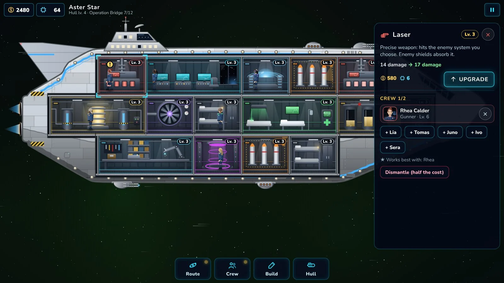
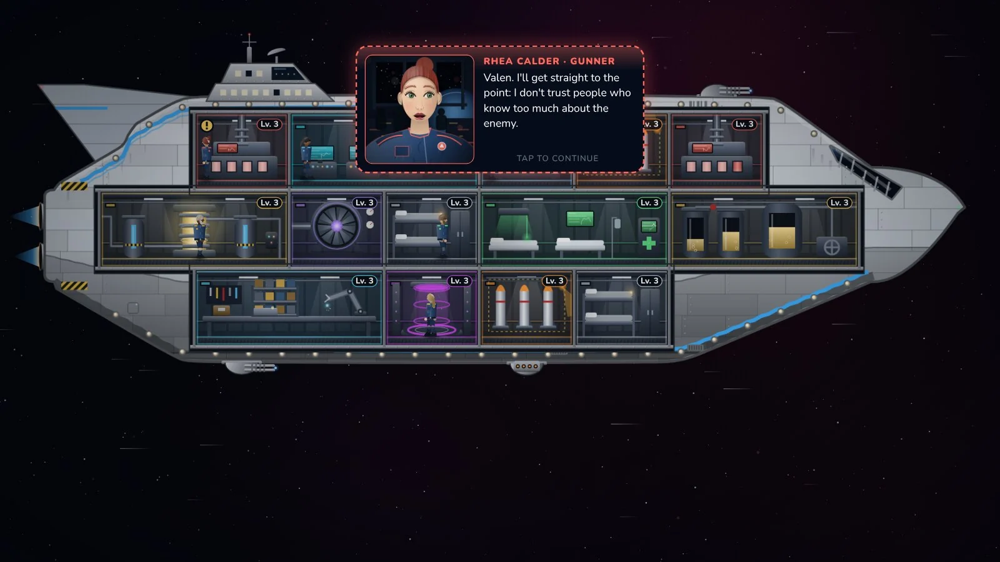

Space Bridge
Gestisci la tua nave, guida l'equipaggio e vinci le battaglie a turni.
Space Bridge è un gioco di gestione della nave con battaglie a turni per Android, nello stesso universo di Space Warfront e degli altri giochi della serie. Sei il comandante di una nave della Coalizione, vista in sezione con le sue stanze e l'equipaggio che ci cammina dentro: costruisci e migliori le stanze, assegni le persone ai posti giusti, raccogli crediti e componenti e parti per le missioni.
Le battaglie sono a turni: non piloti la nave, scegli le mosse. A ogni turno spendi l'energia del reattore per giocare le carte (Laser, Missili, Rinforza scudi, Manovra evasiva, Abbordaggio, Ripara e le mosse speciali dell'equipaggio) su un sistema nemico a tua scelta, leggendo le intenzioni del nemico.
La storia è l'Operazione Ponte, la catena di fari che porta i rinforzi dalla stazione Aster al pianeta fortezza Drakmor: 12 missioni con dialoghi a fumetti prima e dopo, pattuglie da rigiocare ed eventi in cui ogni scelta ha un prezzo o una ricompensa. C'è poi la Battaglia, una serie di scontri sempre più difficili, per il record. Il gioco è per un solo giocatore e funziona senza connessione.
-
PiattaformaApp Android, solo in orizzontale
-
GenereGestione della nave e battaglie a turni
-
ModalitàStoria da 12 missioni, Battaglia, un solo giocatore
-
LingueInglese, italiano, spagnolo, francese, tedesco, russo
-
TecnologiaTypeScript, Canvas 2D e Capacitor
- Costruisci e migliora 11 tipi di stanze e fai crescere lo scafo fino al livello sei
- Assegna sei personaggi ai posti giusti: lavorano meglio e portano in battaglia la loro mossa speciale
- Combatti a turni giocando carte con l'energia del reattore e colpendo i sistemi nemici
- Leggi le intenzioni del nemico e disattiva il sistema che sta per sparare
- Raccogli crediti e componenti: la Raffineria e l'Officina producono anche a gioco chiuso
- Gioca 12 missioni con dialoghi a fumetti ed eventi con scelte, poi sfida il tuo record nella Battaglia
- Impara con il tutorial in una battaglia vera, in sessioni da cinque minuti o mezz'ora
- Gioca senza connessione, in sei lingue








L'interfaccia del gioco segue la lingua del dispositivo (inglese, italiano, spagnolo, francese, tedesco o russo); gli screenshot la mostrano in inglese.
Continua a esplorare
Le altre idee che hanno preso forma, dallo stesso istinto di costruire.
Libri
I miei libri e i prodotti digitali: non solo tecnologia, ma tutto quello che ho imparato, messo in una forma che altri possono usare.
Scopri di piùRepetita
Materiale di studio personalizzato, verifiche simulate e aiuto nei compiti, con IA multi-modello che si adatta al tuo modo di imparare.
Scopri di piùOkkupa
Prenotazione e gestione di spazi e risorse condivise in azienda: postazioni, sale riunioni e asset, con regole di disponibilità e dashboard di utilizzo.
Scopri di piùSpace Titans
Battaglie tattiche in tempo reale tra poche navi enormi: comandi una flotta già schierata, fino a cinque navi contro cinque, in 30 missioni, battaglie libere o multigiocatore sulla stessa Wi-Fi.
Scopri di piùSpace Warfront
Strategia spaziale in tempo reale per Android: richiami la flotta dall'iperspazio, estrai materiale dai meteoriti e guidi un'armata attraverso 30 livelli, in battaglie libere o in multigiocatore sulla stessa Wi-Fi.
Scopri di piùSpace Tactics
Strategia spaziale in tempo reale a conquista di basi: conquista, potenzia e difendi le basi sulle rotte iperspaziali, in 30 missioni, battaglie libere o multigiocatore sulla stessa Wi-Fi.
Scopri di piùSpace Defense
Tower defense spaziale: costruisci e potenzia torri lungo le rotte iperspaziali per fermare l'invasione degli Skarn, in 30 missioni, battaglie con ondate infinite o multigiocatore cooperativo sulla stessa Wi-Fi.
Scopri di piùArgus
Previsioni di mercato e analisi AI per crypto: forecasting quantitativo, pipeline multi-agente e backtest integrato.
Scopri di piùOrion
Editor PDF desktop offline: legge, modifica testo e immagini, annota e riorganizza le pagine, poi salva un PDF normale. Nessun account, nessun cloud.
Scopri di piùIris
Trasforma un elenco di aziende e indirizzi email da PDF, Excel o CSV in email personalizzate, inviate in un'unica sessione SMTP.
Scopri di piùProteus
Sostituisce in blocco loghi e file grafici in un'intera struttura di cartelle: trova le corrispondenze, mostra un'anteprima prima/dopo e sovrascrive con backup recuperabili.
Scopri di piùP7M Manager
Apre i file .p7m: mostra cosa contengono, chi li ha firmati e quando, e ne estrae il documento. Un file o un'intera cartella, in coda, senza cloud né account.
Scopri di piùTyche
Scarica l'intero storico del SuperEnalotto, lo sottopone a test di indipendenza e a backtest con TimesFM 3.0, e misura onestamente quanto valgono le previsioni: la risposta, con le prove, è nessuna.
Scopri di piùStudio Urbani
Sito istituzionale per uno studio di commercialisti e consulenti del lavoro a Roma: pagina unica, bilingue, senza dipendenze esterne, con le recensioni Google aggiornate ogni notte.
Scopri di più